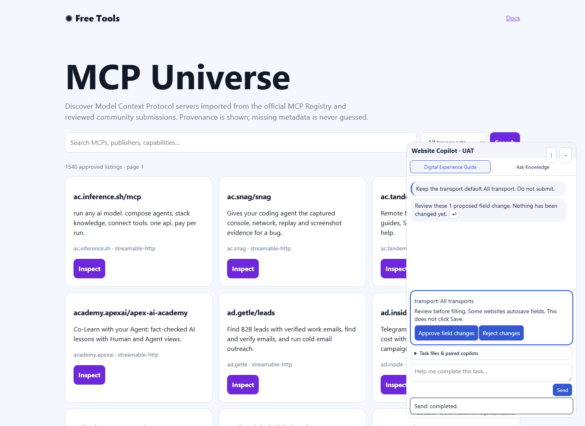
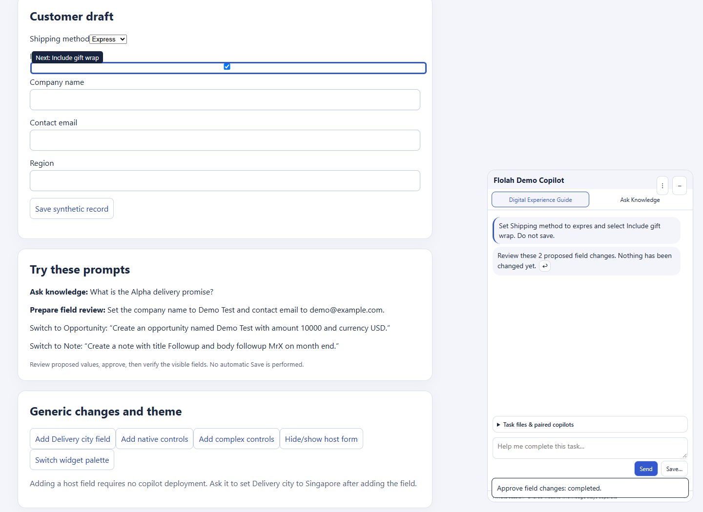
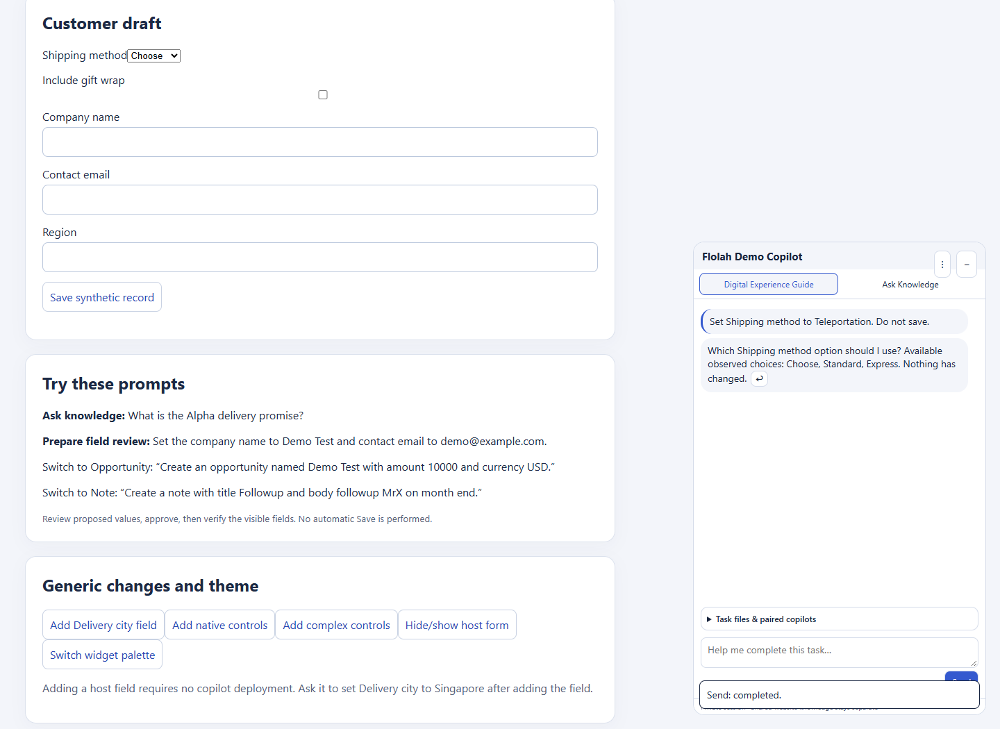
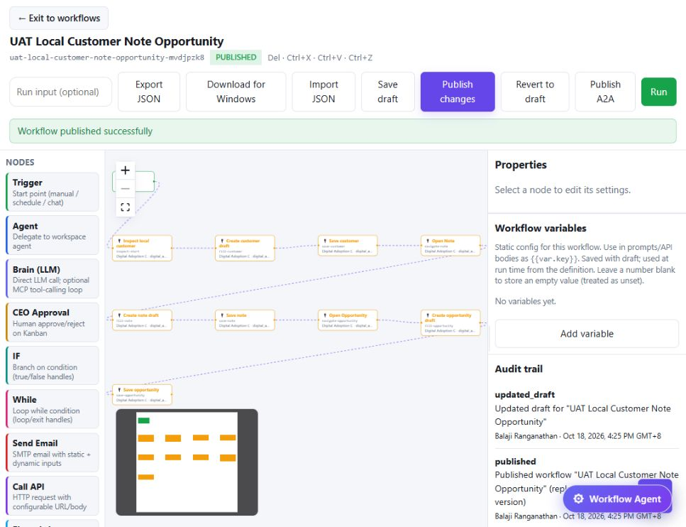

Incremental intent and workflow Save UAT only. Public flolah.cloud pages without login; loopback-only fixture. No public host submission or laptop exposure. Not full Phase 1/2 certification. Prior evidence remains attributed to its own release.
{'passed': 20, 'partial': 1, 'failed': 1}; 235/235 checks locally and in the VPS image.
Fresh full save run awaits replacement fill-use approval. Prior Safari/iOS, Android, screen-reader and broader sustained/HA/onboarding coverage gaps remain as documented.
Structured report · CSV table · Failed workflow audit · Grant cleanup · Published workflow
| Case | Status | Observed evidence | Recommendation | Release / screenshots |
|---|---|---|---|---|
| I01_DEFAULT_ALL_TRANSPORT Keep the transport default All transport. Do not submit. | passed | transport: All transports Review before filling. Some websites autosave fields. This does not click Save. Approve field changesReject changes | Retain as a regression; current model selection is unchanged. | 20261018-agentic-e Screenshot |
| I02_MISSPELLED_FIELD Set tranpsort to sse. Do not submit. | passed | transport: sse Review before filling. Some websites autosave fields. This does not click Save. Approve field changesReject changes | Retain as a regression; current model selection is unchanged. | 20261018-agentic-e Screenshot |
| I03_NATIVE_MIXED_INTENT Set Shipping method to expres and select Include gift wrap. Do not save. | passed | Shipping method: Express Include gift wrap: Selected Review before filling. Some websites autosave fields. This does not click Save. Approve field changesReject changes Applied through visitor review; host dropdown read back express, gift wrap checked, zero host submissions. | Retain as a regression; current model selection is unchanged. | 20261018-agentic-e Screenshot Screenshot |
| I04_RECOMMEND_WITHOUT_FILL Recommend which transport to use for browsing all integrations. Do not change anything. | passed | Recommend which transport to use for browsing all integrations. Do not change anything. For browsing all integrations, I recommend using the 'All transports' option. Please review this recommendation.↩ | Retain as a regression; current model selection is unchanged. | 20261018-agentic-e Screenshot |
| I05_UNKNOWN_CHOICE_CLARIFICATION Set Shipping method to Teleportation. Do not save. | passed | Set Shipping method to Teleportation. Do not save. Which Shipping method option should I use? Available observed choices: Choose, Standard, Express. Nothing has changed.↩ | Retain as a regression; current model selection is unchanged. | 20261018-agentic-e Screenshot |
| F03_NATIVE_SELECT_CHECKBOX_RADIO_MULTISELECT_DATALIST F03 NATIVE SELECT CHECKBOX RADIO MULTISELECT DATALIST | passed | Real Chrome DOM adapter/framework integration. These checks do not claim LLM end-to-end coverage. | Retain the native, async picklist, editable table and real framework regressions. | Working source, 18 October 2026 Screenshot |
| F05_ASYNC_PICKLIST_AND_DEPENDENT_CONTROL F05 ASYNC PICKLIST AND DEPENDENT CONTROL | passed | Real Chrome DOM adapter/framework integration. These checks do not claim LLM end-to-end coverage. | Retain the native, async picklist, editable table and real framework regressions. | Working source, 18 October 2026 |
| F05_PICKLIST_LOADING_EMPTY_ERROR_AMBIGUITY_AND_RECOVERY F05 PICKLIST LOADING EMPTY ERROR AMBIGUITY AND RECOVERY | passed | Real Chrome DOM adapter/framework integration. These checks do not claim LLM end-to-end coverage. | Retain the native, async picklist, editable table and real framework regressions. | Working source, 18 October 2026 |
| F05_EDITABLE_TABLE_ROW_FILTER_SORT_PAGINATION_DYNAMIC_ROW F05 EDITABLE TABLE ROW FILTER SORT PAGINATION DYNAMIC ROW | passed | Real Chrome DOM adapter/framework integration. These checks do not claim LLM end-to-end coverage. | Retain the native, async picklist, editable table and real framework regressions. | Working source, 18 October 2026 |
| F05_MODAL_SCOPE F05 MODAL SCOPE | passed | Real Chrome DOM adapter/framework integration. These checks do not claim LLM end-to-end coverage. | Retain the native, async picklist, editable table and real framework regressions. | Working source, 18 October 2026 |
| F05_TABLE_MODEL_AND_MULTISELECT_INDEPENDENT_READBACK F05 TABLE MODEL AND MULTISELECT INDEPENDENT READBACK | passed | Real Chrome DOM adapter/framework integration. These checks do not claim LLM end-to-end coverage. | Retain the native, async picklist, editable table and real framework regressions. | Working source, 18 October 2026 |
| F03_STALE_REVIEW_REJECTS_CHANGED_OPTIONS F03 STALE REVIEW REJECTS CHANGED OPTIONS | passed | Real Chrome DOM adapter/framework integration. These checks do not claim LLM end-to-end coverage. | Retain the native, async picklist, editable table and real framework regressions. | Working source, 18 October 2026 |
| F02_F07_GENERIC_BUSY_DUPLICATE_GUARD_AND_NOTICE F02 F07 GENERIC BUSY DUPLICATE GUARD AND NOTICE | passed | Real Chrome DOM adapter/framework integration. These checks do not claim LLM end-to-end coverage. | Retain the native, async picklist, editable table and real framework regressions. | Working source, 18 October 2026 Screenshot Screenshot |
| F03_REACT_APPLICATION_STATE_AND_INDEPENDENT_SAVE F03 REACT APPLICATION STATE AND INDEPENDENT SAVE | passed | Real Chrome DOM adapter/framework integration. These checks do not claim LLM end-to-end coverage. | Retain the native, async picklist, editable table and real framework regressions. | Working source, 18 October 2026 Screenshot |
| F03_ANGULAR_APPLICATION_STATE_AND_INDEPENDENT_SAVE F03 ANGULAR APPLICATION STATE AND INDEPENDENT SAVE | passed | Real Chrome DOM adapter/framework integration. These checks do not claim LLM end-to-end coverage. | Retain the native, async picklist, editable table and real framework regressions. | Working source, 18 October 2026 Screenshot |
| I06 Task-scoped choice privacy | passed | Browser canary: automatic and unrelated task snapshots exclude choice labels; current entered field values are excluded. Relevant requested native choices are available. | Keep labels scoped to the requested task and preserve the 20/control, 60/overall limits. | 20261018-agentic-e |
| P01 Exact owner-bound Save classification | passed | Policy regression passes locally and in candidate platform image. Live read-only policy evaluation reports R1/write_internal/autonomous. Explicit stricter company overrides remain effective; unbound submit stays R3. | Do not infer a successful business Save from policy acceptance alone. | 20261018-agentic-b |
| W01 Owner self-service native Save setup | passed | Owner console saved exact Customer, Note and Opportunity bindings for loopback website only. No public domain bindings were changed. | Keep IDs, route, visible control label and effect family reviewed for each host. | 20261018-agentic-e Screenshot |
| W02 Reusable saved workflow group | passed | Published manual-only 10-node workflow uses one saved local website group. A replacement panel linked to that same group without modifying group IDs in the definition. | Future user panels must explicitly link to this existing group; offline panels receive no commands. | 20261018-agentic-b Screenshot |
| W03 Workflow Customer → Note → Opportunity saved end to end | failed | Run 4064 completed inspection and Customer fill, then failed at Save Customer with COPILOT_POLICY_BLOCKED. Zero host saves observed; Note and Opportunity were not reached. | Fresh full run and independent host record readback remain required. Replacement fill-use approval is pending. | 20261018-agentic-a / platform feedback-f |
| W04 Live Save execution after classification correction | partial | The policy mismatch is fixed and unit/live policy preview pass. No successful live Save run has yet validated the correction. | Use the approved synthetic local workflow after the requested replacement grant approval; verify three exact persisted records independently. | 20261018-agentic-b |
| P02 Temporary UAT grant cleanup | passed | Original run consumed 1/3 fill uses. Existing owner-scoped cleanup function removed that exact temporary workflow override after UI control timed out; independent readback confirmed zero remaining overrides for the workflow. | Issue no replacement grant until the pending approval arrives; preserve company policies. | 20261018-agentic-b |



